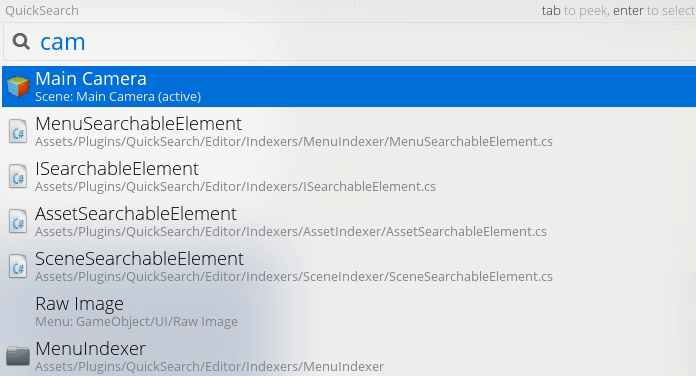

Available at Github, Quick Seach plugin is a command pallete for Unity which main purpose is to help you navigate through your game files and Unity commands. It's especially suitable if your project is a medium or large sized one and you have too many files.
In more technical terms, Quick Search extends the editor to accomplish its main function. It also allows you to change the default assets, so you really can have your very own customized search box within Unity. There are great additional features as well, such as drag and drop, which concedes you the control of your seach box absolute position and file preview or peek, in case you're looking for a file, but you are not quite sure that is the one.